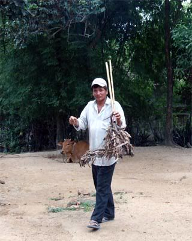
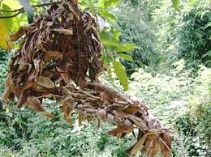
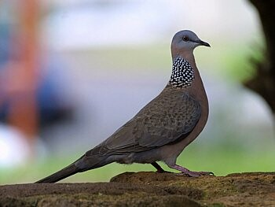

Đây là lần đầu tiên đi gác mà thằng Phệ thấy chú Tư đi vào buổi chiều, đem theo cả hai con cu mồi Thanh Nhã và Thanh Ngọc, nhưng vì chú cho cả bọn đi chung với nhau nghĩ đến ban đêm được ở ngoài trời, có thể được cùng đi soi ếch, nên Nó và bọn thằng Phệ răm rắp làm theo những gì mà chú Tư dặn dò, phân công cho từng đứa. Cơm nước xong, năm chú cháu lên đến Đồng Ông Cộ thì trời đã chạng vạng, trong lúc Nó, thằng Rèo và Cống lo căng mấy tấm bạt chổ lùm mật cật để phòng bị mưa có chổ trú thì chú Tư và thằng Phệ tìm chổ để đặt hai chiếc lúp cu mồi. Nơi ngọn cây mù u cao nhứt chú Tư vẫn đặt con Thanh Nhã nhưng chú lựa chổ thấp hơn hôm qua và có một vài nhánh nhỏ mù u che bên ngoài, như là con Thanh Nhã muốn tìm chổ nấp. Hơn chục mét về bên phải là một cây me cành lá um tùm rậm rạp, nhưng thấp hơn nhiều so với cây mù u, chú đã đặt chiếc lúp con Thanh Ngọc nhô lên cao, mà từ chổ con Thanh Nhã nhìn sang thấy rất rỏ ràng. Mặt trời đã hoàn toàn xuống núi, trong làn gió mát của ruộng đồng bước vào đêm, chú Tư xoa tay nhìn lại vị thế của hai chiếc lúp mà chú chắc chắn lần nầy nếu con Thanh Ngọc nổi hứng như hôm qua thì con đôi rừng chạy đâu cho thoát, và chú cao hứng nhìn bọn nhóc khi trong các tàng cây lũ chim rừng gọi nhau ríu rít:
- Tụi mầy tối nay có đi bắn chim rừng, cẩn thận coi chừng trúng hai cái lúp nha …
Thằng Phệ nhanh nhẩu:
- Dạ, con thấy rỏ chổ đặt mà chú Tư, tụi con né xa xa chút hihihi
- Ừ, thì tao dặn trước cho tụi mầy nhớ vậy mà … hy vọng tối nay ổng không mưa …
- Không mưa là cái chắc á chú Tư … thằng Hưng Rèo xen vô … mặt trăng mọc lên đâu có đám mây nào che đâu …
Chú Tư Thiệt cười:
- Biết đâu được … nhưng hy vọng như vậy đi … tụi mầy đừng đi xa và không quá nửa đêm nha …
Chú Tư chưa dứt lời thì bốn tên nhóc, như đã bắt cặp từ trước, kiểm lại đồ nghề. Thằng Phệ bỗng nhìn Nó:
- Ê, Trụi … mầy có mang cái đèn pin theo không?
Nó giựt mình “chết cha … quên rồi” … Nhìn mặt Nó thộn ra, thằng Phệ giơ hai tay lên đầu:
- Mầy quên thì còn làm ăn gì được, ở nhà húp cháo thôi … Thấy Nó và thằng Phệ thất vọng nhìn hai thằng Rèo và Cống thử đèn thử ná, chú Tư Thiệt mĩm cười:
- Tao cho mượn đèn pin của tao, nhưng phải 2 con sẻ chịu không?
Mắt thằng Phệ sáng hẳn lên:
- 2 con sẻ, chuyện nhỏ, con sẽ kiếm cho chú Tư 2 con chìa vôi mập và bự hơn hì hì …
Chú Tư Thiệt lấy trong túi đồ nghề ra chiếc đèn pin của Quân đội thường dùng, do một người bạn thân đã cho chú mà thằng Phệ biết chú rất quý vì mặt kiến của đèn rất đặc biệt, tập trung ánh sáng rất mạnh, ít hao pin và không bao giờ thấm nước khi trời mưa, trao cho nó:
- Nè, tụi mầy đi đi, tao ngã lưng chút, rồi bắt nồi cháo cho … hy vọng tụi mầy không để tao ăn cháo trắng đêm nay.
Không chờ chú Tư Thiệt nhắc lại, bọn trẻ đã nhanh như sóc lủi vào bóng đêm, trong lúc chú Tư Thiệt cột chiếc võng của mình vào hai cây mật cật. Chú Thiếm Tư không có con, nên từ lâu chú đã xem tụi thằng Phệ, Hưng Rèo, Đức Cống như con của mình, nhứt là thằng Phệ vì nó luôn hiểu ý chú trong tất cả mọi việc, bây giờ thì thêm một thằng nữa, một ý nghĩ thoáng qua và chú mĩm cười trong bóng đêm.
Như đã quen với những sinh hoạt như thế nầy, nên khi nồi cháo của chú Tư vừa nhừ thì tiếng láo nháo lẫn trong tiếng cười hả hê của bọn trẻ cũng theo làn gió đêm mát lạnh vọng về và thằng Phệ lúc nào cũng to họng nhứt:
- Quá đã chú Tư ơi, tụi con vô mánh á …
Và bốn tên nhóc đã ùa về bên chú Tư đang đong đưa trên chiếc võng. Nó đưa ra trước chú Tư chiếc bao xốp (tên gọi bây giờ của túi nylon) bên trong là một số chim sẻ và 2 con chim thật bự đen thùi đã được làm sạch:
- Con bỏ vô nồi cháo nha chú Tư?
- Còn chờ lính tới sao mậy … thằng Phệ cười ha hả …
Nhưng chú Tư Thiệt đã nhỏm dậy:
- Đâu đưa tao coi … cha, hai con bìm bịp nầy ngon à Phệ, tụi mầy kiếm đâu ra vậy … chời ơi, thằng nào mần mà không cắt mỏ, cắt giò gì hết, vậy phần nầy dành cho thằng đó nha.
Thằng Đức Cống phái chí xen vô:
- Đúng đó chú Tư, chút nữa thằng Phệ lảnh phần đó hihihiii
Thằng Phệ gải đầu nhìn thằng Đức Cống cười trừ:
- Hì hì, con dao của mầy lụt nhách, cắt dái cũng không đứt, mần tới sáng dễ xong à, lò mò chổ sòng tát đìa của người ta, đèn nhá tới nhá lui, họ tưởng vô câu trộm cá chạy ra lại thêm phiền, hơn nữa tao biết mấy vụ nầy chú Tư làm nhanh hơn tụi mình nhiều, và nó chuyển đề tài khoe với chú Tư:
- Chú Tư, hai con bìm bịp nầy tới số, đậu thấp chủm trong lùm cây trâm bầu, thằng Trụi soi đèn, thấy tụi con còn không bay nên cho mồi con với thằng Rèo, một phát một á chú Tư …
- Ban đêm tụi nó nhìn ánh dèn cứ tưởng trăng sáng nên làm sao thấy tụi bây được chứ … chú Tư Thiệt cười vui theo bọn trẻ …
Tám con chim se sẻ, hai con bìm bịp bự xộn cộng thêm bốn trứng vịt chú Tư mang theo đã làm nồi cháo của chú cháu chú Tư Thiệt ngọt lịm và mấy chú cháu lăn quay ra khò khi thằng Phệ đã vét xong nồi và ánh trăng thượng tuần lên khỏi ngọn mù u.
Tiếng ríu rít của đám chìa vôi, tiếng “trào trảo” của bầy trao trảo trong các lùm mật cật um tùm cùng đủ thứ tiếng của bầy chim rừng sống trong Đồng Ông Cộ báo hiệu bình minh cho một ngày nắng đẹp, thì chú cháu của chú Tư Thiệt, đã ẩn kín mình trong các lùm cây bên dưới, căng mắt nhìn lên hai chiếc lúp treo hai con cu mồi Thanh Nhã và Thanh Ngọc, mà như lời chú Tư Thiệt bật mí cho tụi nhóc biết, theo kinh nghiệm của chú thì còn Thanh Ngọc hôm nay mới là đối tượng tấn công của con đôi rừng. Theo chú đi gác cu nhiều lần, nhưng thằng Út Phệ, cũng không biết tại sao, vì gáy thi với con đôi rừng hổm nay chỉ có con Thanh Nhã, và Phệ ta nhớ lại lúc treo chiếc lúp của con Thanh Ngọc lên tàng me, khác hẳn với bên con Thanh Nhã, chú Tư Thiệt dặn mấy lần là không được treo một bông lúa nào trên chiếc lúp, chỉ được treo bên ngoài xa xa, ý chừng chỉ cho con Thanh Ngọc thấy chứ không ăn được, nhưng hỏi thì chú Tư Thiệt chỉ cười “Mầy tin tao đi”, nên mới lờ mờ sáng, thằng Phệ và Nó liền theo chú Tư phục kích dưới lúp con Thanh Ngọc, để bên con Thanh Nhã cho hai thằng Rèo và Cống.
Nắng sớm mai mát rượi rải đều trên những tàng cây, ruộng đồng đã âm vang tiếng cười nói của người thôn dã bắt đầu cho một ngày làm việc, trong lúc chú cháu chú Tư Thiệt thì núp kín trong lùm cây, không dám thở mạnh, đợi chờ … Họ đợi cũng không lâu, khi một đàn sắc ô từ đâu tíu tít đáp xuống tàng me nhằm ngay những chùm bông lúa mà tụi thằng Rèo cột rải rác quanh chiếc lúp con Thanh Ngọc, không khéo mà bọn sắc ô nầy làm sạch hết thì công cốc rồi, còn gì để dụ địch. Nhìn qua, Nó thấy thằng Phệ phùng má tức tối, trong lúc chú Tư Thiệt nhíu mày thở nhẹ và Nó nghe có tiếng đập cánh của con Thanh Ngọc bên trong chiếc lúp. Nhưng cũng vừa lúc đó, từ trên đọt của cây mù u tiếng gáy của con Thanh Nhã thật khoan thai ngân dài:
- Cù cú cuuuuu cu cu … Cù cú cuuuuu cu cu … Cù cú cuuuuuuu cu cu … Cù cú cuuuuuu cu cu …
Chắc là được chăm sóc ăn no ngủ kỷ, được nhìn thấy cảnh trời trong mây gió ngay vừa lúc bình minh, nên tiếng gáy của con Thanh Nhã thật sung độ lảnh lót … và chỉ sau vài lần cất cao giọng gáy của con Thanh Nhã, chú cháu chú Tư Thiệt bỗng thấy lũ sắc ô hốt hoảng bay vù đi tứ phía và bầy con đôi đã đáp xuống những tàng cây. Như một phản xạ tự nhiên, chú Tư Thiệt nhìn hai tên nhóc, và đưa một ngón tay lên che miệng ngầm ý bảo tụi nó phải thật im lặng với những sự kiện ở trên cao, vì con đôi chúa đàn vừa đáp xuống đã gáy đáp trả con Thanh Nhã không kém phần sung mãn:
- Cù cú cuuuuuuuuuu cu cu … Cù cú cuuuuuuuuuu cu cu... và chỉ sau 2 lần gáy, nó đã phùng lông cổ “thúc” thách thức con Thanh Nhã:
- Cu cu cu … Cu cu cu … Cu cu cu …
Nghe bên kia, con đôi rừng và con Thanh Nhã đang xáp độ, mà bên nầy con Thanh Ngọc vẫn im lìm, chỉ lâu lâu đập cánh loạn xạ như muốn bay ra kiếm ăn vì chắc con Thanh Ngọc nhìn thấy những chùm bông lúa cột bên ngoài, đã bị lũ sắc ô rồi bây giờ là đám trong bầy con đôi vặt gần sạch sẽ … nên Nó và thằng Phệ sốt ruột nhìn sang chú Tư Thiệt thì thấy chú vẫn im lặng nhìn lên tàng me, hình như không để ý gì đến cuộc chiến bên kia khi cả hai đấu thủ không ai chịu thua kém ai từ gáy, đến thúc rồi bo …
Bỗng chú Tú Thiệt nhéch mép cười, đôi mắt sáng hẳn lên khi trên tàng me, con Thanh Ngọc cất cao tiếng gáy:
- Cù cú cuuuuu cu … Cù cú cuuuuu cu … Cù cú cuuuuu cu … tiếng gáy như có vẽ thúc giục tức tối vì âm dứt của nó cụt ngủn chứ không ngân dài như thông thường. Sau vài lần gáy, con Thanh Ngọc lại lên tiếng “thúc” dồn dập hơn:
- Cu cu cu … Cu cu cu … Cu cu cu …
Và thật lạ lùng, khi con Thanh Ngọc chưa “thúc” được mấy hồi thì bên kia, con Thanh Nhã và con đôi rừng không biết đã ngừng đấu khẩu với nhau từ lúc nào, và trong ánh mắt căng tròn nhìn lên không nháy của chú Tư Thiệt, thằng Phệ và Nó thoáng thấy một cánh chim bay lao vào chổ con Thanh Ngọc như điện xẹt:
- Bộp …!
Tiếng bẩy đập khô khan, tiếng vổ cánh loạn xạ cùng lúc với bầy cu trên tàng me hốt hoảng bay vút lên cao và lớn nhứt là tiếng hét của thằng Út Phệ sau khi đứng phắt dậy, phóng đến bên gốc cây me có chiếc lúp con Thanh Ngọc ở trên:
- Dính rồi … chú Tư ơiiiiiiiii …!
Nó cũng phóng theo thằng Út Phệ bén gót, trong lúc chú Tư vẫn chăm chú nhìn lên chiếc lúp và thoáng thấy một cánh chim đang vùng vẩy tuyệt vọng trong tấm lưới chụp trước cửa lúp:
- Từ từ, để đó cho tao, coi chừng té đó Phệ …
Đang định leo lên cây me, nghe tiếng chú Tư, thằng Út Phệ quay nhìn lại:
- Con leo được mà chú Tư, không sao đâu …
- Leo lên không có sào, mầy lấy răng cắn nó mang xuống à …
Nghe chú Tư nói vậy, thằng Phệ nghệch ra thì vừa lúc hai thằng Rèo và Cống hộc tốc chạy sang liền miệng:
- Con đôi sập bẩy rồi hả chú Tư, tụi con thấy nó đang sừng cổ với con Thanh Nhã thì bỗng nhiên bay vút qua bên nầy, nó đâu, nó đâu …?
- Còn trên cây kìa … được rồi, tao giao bên nầy cho tụi bây, từ từ trèo lên, đem nó xuống, để tao qua bên kia lo phần con Thanh Nhã, cẩn thận đó nha …
Cả bọn con nít nhao nhao:
- Chú Tư an chi … tụi con nghề mấy vụ nầy mà hi hi hi …
Chú Tư Thiệt cũng mĩm cười đắc ý lôi trong lùm mật cật ra hai cây sào, mà hôm qua chú cháu đã dùng để đặt hai chiếc lúp lên cành cao, đưa cho thằng Rèo một cây, chú cầm một cây đi về phía cây mù u có chiếc lúp của con Thanh Nhã bên trên, mà lúc bấy giờ, chỉ còn tiếng gió ban mai rì rào qua cành lá sau cuộc chiến tàn đã phân định rỏ ràng kẻ thắng người thua.

Chú Tư Thiệt
Chú Tư Thiệt một tay xách chiếc lúp con Thanh Nhã, một tay xách một chiếc lồng không, mà hôm qua chú đã cẩn thận mang theo dự trù nhốt chiến lợi phẩm, trở qua bên bọn nhóc thì thấy chúng nó đang xúm quanh chiếc lúp của con Thanh Ngọc bàn tán xì xào, mà lúc nào cũng tiếng thằng Út Phệ là to nhứt:
- Con đôi rừng nầy thật chiến đấu nha tụi bây, chắc nó làm chúa đàn lâu lắm đó …
- Sao mầy biết? thằng Hưng Rèo trề môi … và thằng Cống cười hì hì tiếp lời thằng Rèo trong khi Nó nhìn chăm bẩm vào con đôi rừng đang cố vùng vẩy trong tấm lưới chụp:
- Con đôi rừng nầy biết mầy xạo, nên phản đối đó Phệ …
Thằng Phệ không trả lời hai thằng Rèo và Cống khi nhìn thấy chú Tư đi qua:
- Chú Tư ơi, con đôi rừng nầy ngon đó, bự con, sắc lông thật đậm, nuôi làm con mồi bá chấy bù chét á chú Tư …
Như đồng tình với thằng Phệ, và nhìn ánh mắt say mê của Nó nhìn con Tướng Thần trong lưới, chú Tư đưa chiếc lồng không cho Nó:
- Ê nhỏ, mầy thích nuôi Tướng Thần của mầy không? và không đợi Nó trả lời, chú Tư nhìn ba tên kia cười:
- Con Tướng Thần cho thằng Bình, tụi bây có đứa nào phản đối không?
Ba tên kia nhao nhao:
- Chú Tư cho thằng Trụi ha ha ha, để nó cực phù mỏ luôn …
Nó nghe chú Tư nói cho Nó con Tướng Thần, phái chí quá chưa biết nói gì lại nghe tụi kia nói cực phù mỏ nên Nó càng ngẩn tò te hỏi lung tung:
- Cực, sao lại cực chứ, có gì đâu mà cực …?
Thằng Út Phệ nhìn Nó cười lên mặt thầy đời:
- Từ từ dính chấu rồi mầy sẽ biết … và Phệ ta nói với chú Tư khi mở cửa bẩy từ từ bắt con Tướng Thần bỏ vào chiếc lồng trống Nó đã mở sẳn cửa:
- Con thấy chú Tư cho thằng Trụi là đúng á, Nó Trụi mà hên, chú cháu mình đi một lần đã bẩy được Tướng Thần nguyên con rồi, không trật vuột như những lần trước, nhứt là mới đây, bẩy đập địch thủ của con Thanh Nhã chết tươi làm mồi cho chú Tư nhậu hi hi hiiiiiii …
Chú Tư Thiệt nhìn Nó xăm xoi con Tướng Thần đang đập cánh bay loạn xạ khi được bỏ vào lồng:
- Ừ, tao biết chắc hôm nay, nếu con Thanh Ngọc chịu gáy con Tướng Thần sẽ dính bẩy thôi, vì với bản tánh chúa đàn, nó rất ghét trong đàn có tên nào gáy khi nó đang chiến đấu với kẻ thù định xâm chiếm lảnh địa của nó. Đó là lý do tao biểu tụi bây đừng cột bông lúa trên lúp con Thanh Ngọc … không được ăn lại nhìn thấy bên ngoài đồng loại đang no nê, bên tai lại nghe những tiếng gáy như chọc giận, con Thanh Ngọc dĩ nhiên sẽ tức mình gáy trả rồi … Con chúa đàn bên kia, nghe con Thanh Ngọc gáy bên nầy, nó lại nghĩ có tên nào trong đàn ngứa mỏ, sẽ bay lại độp tên đó thôi, và mọi diển tiến đều đúng y như tao dự đoán … chú Tư chấm dứt câu nói bằng một nụ cười khoan khoái hả hê … Và chú bây giờ thản nhiên lấy gói thuốc rê ra vấn một điếu:
- Mà tụi mầy có biết không, tao biết như vậy khi hôm qua, thấy con Tướng Thần đang gáy thi với con Thanh Nhã mà vừa nghe tiếng gáy của con Thanh Ngọc là bay đi tìm đó …
Chú Tư rít một hơi thuốc rê, nhả khói cho đã cơn ghiền, trong lúc bọn nhóc nhìn chú phục lăn …
- Thôi mình vìa đi, bộ tụi mầy không đói bụng sao chứ …?

Thanh Nhã

Tướng thần